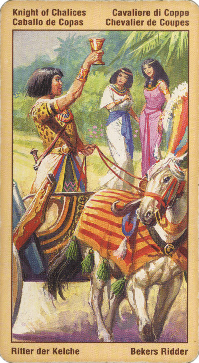

Принц Кубков (Рыцарь)
Этот Принц - Рыцарь Грааля, больше всего на свете он стремится к поиску любви и красоты. Это заботливая, чуткая, добрая и творческая душа, это человек, стремящийся найти свою миссию в этой жизни. Как правило, такие люди легко сходятся и общаются с другими, могут без труда им сочувствовать и сопереживать, что делает их хорошими советчиками и врачевателями. Его перестало заботить мнение публики, он выполняет свою высокую миссию.
В гадании – способность внушать другим то, что требуется человеку для выполнения его намерения, или наличие некоего скрытого намерения.
Если в раскладе вам выпадает эта карта, то это может значить, что вы приглашаете других принять участие в некоем событии социального или творческого характера, либо предлагаете им свою помощь. В качестве альтернативы данная карта может предполагать предстоящее путешествие по воде.
Там, где царили раздоры и конфликты, эта карта провозвещает примирение и покой. Это и просто часы отдыха, время, когда мы даём волю своему воображению, радуемся красоте жизни, наслаждаемся искусством, особенно музыкой.
С рыцарем кубков может быть связано и какое-то выгодное для вас денежное предложение.
Рыцарь. Эта карта во многом противоположна принцессе кубков: если тот по большей части стремится к «приобретению» (новые знания, новый жизненный и эмоциональный опыт, новые привязанности и увлечения), то Рыцарь Чаш, напротив, томим смутным желанием отдавать.
Но людям такого склада нелегко бывает реализовать собственные знания и опыт: они мало приспособлены к тому, чтобы «рекламировать» себя и свои достижения в кругу обычных людей.
При гадании на любовные отношения Рыцарь Чаш дает вам понять, что вы слишком оторвались от жизни и ваши планы и надежды имеют мало общего с окружающей реальностью. Постарайтесь трезво взглянуть на ситуацию: это позволит вам более адекватно воспринимать людей и действительность!
Честный, умный молодой человек. Брат (сестра), хороший друг или подруга. Возлюбленный(ая). Гость или приглашение в гости. Взаимная любовь. Новое скорое знакомство. Талант, стремление к уюту, неожиданное получение денег.
В перевернутом виде – внушаемость, то есть в некотором роде зависимость от чужих намерений.
Эттейлла - Ключевые слова: Молодой друг приносит подарки или делает предложения. Ненадежный дилер. Авантюрист.
Рыцарь масти Кубков — приятный, милый, чувствительный, романтический молодой человек; дружелюбный, но скорее для виду; трудолюбивый больше на словах, чем на деле; по характеру неглубокий; бездельник, эстет и дилетант. В целом этот аркан означает послание или прибытие, предложение или план, то есть появление чего-то, что объяснит следующая за Рыцарем карта.
В перевернутом положении она возвещает плутовство и предостерегает вас быть осторожнее с вашим кошельком или с вашими драгоценностями, когда вы будете в публичном собрании.
Она может также указывать на то, что в вашем близком окружении имеется капризный и ленивый человек; лжец, неспособный держать слово; лживый, бесхарактерный человек или шизофреник. В целом эта карта в перевернутом виде символизирует обман, предательство, надувательство.